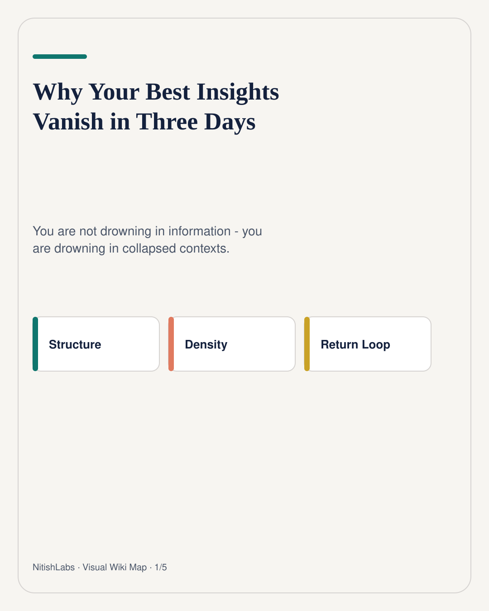
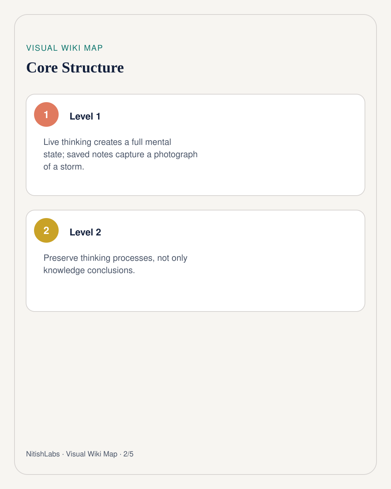
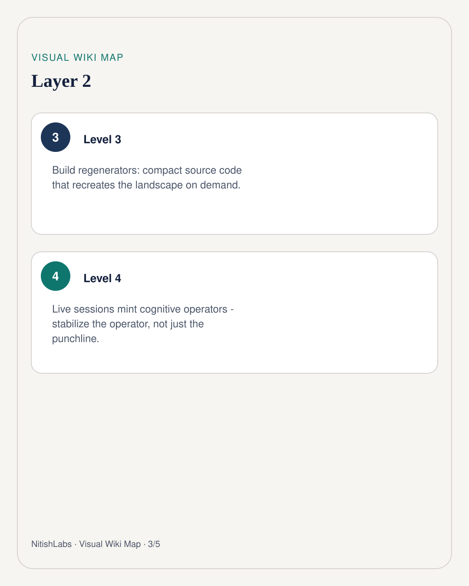
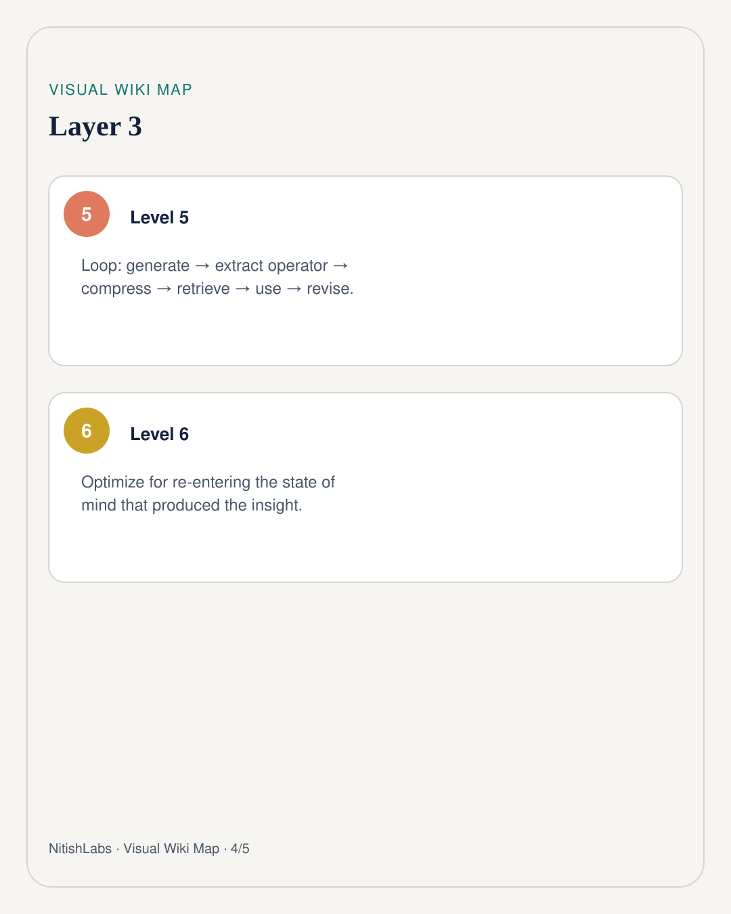
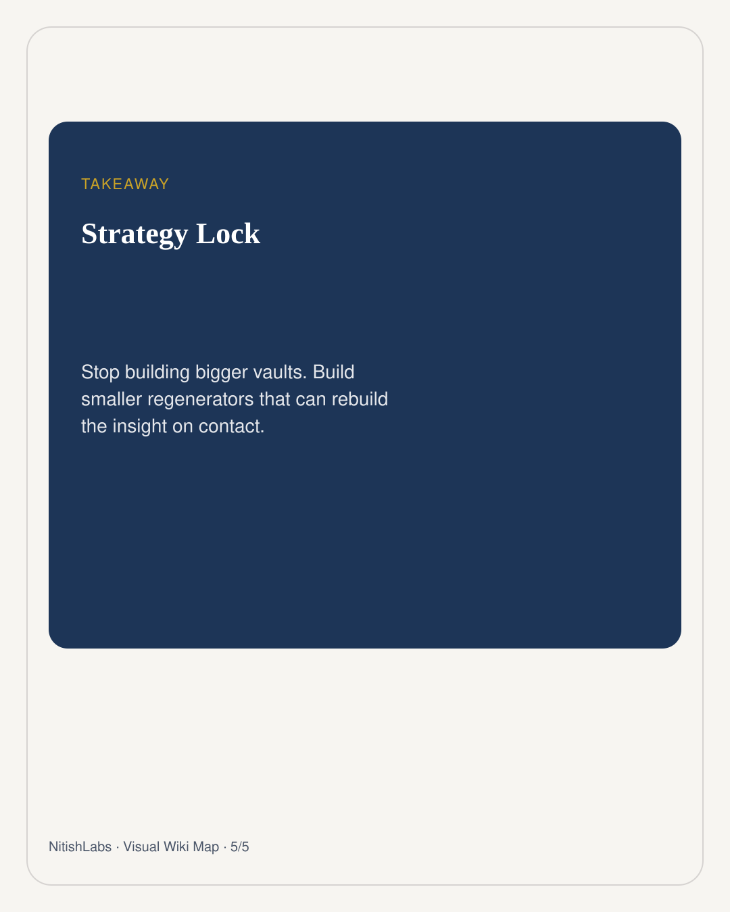

Why Your Best Insights Vanish in Three Days
The insight did not die. The mental weather that made it feel true collapsed. Bigger vaults will not fix that - regenerators will.
Visual Wiki Map
Compressed schema carousel · swipe





You generate a rich insight in conversation. Assumptions, analogies, emotion, and half-spoken connections are all online at once. Then you “save” it - a paragraph, a bookmark, a graph node.
Three days later the note looks dead. Not because you are forgetful. Because you saved a photograph of a thunderstorm. Nitish Chauhan named the real enemy: collapsed context.
Knowledge vs thinking process
Knowledge says: “Expansion requires anchors.” A thinking process says: “Whenever my world expands faster than I can integrate it, stop and ask what stable center everything docks to.”
The second regenerates the insight. The first only records its conclusion.
Think software. A compiled binary is bulky and brittle. Source code is smaller - and can rebuild the program. Your second brain may need less archive and more source.
Conversations mint operators
Live thinking does not only produce conclusions. It produces cognitive operators - reusable moves like “separate observation from interpretation” or “look for leverage before effort.” Forget the punchline if you must. Stabilize the operator.
Generate → Extract operator → Compress → Retrieve → Use on a new problem → Revise
Use is the missing stage. An operator that sits unread for six months is costume jewelry. The third time you apply it to a different domain, it becomes capital.
Design for re-entry
- Store the trigger question that reopened the landscape.
- Store one compressed schema of the argument, not the transcript.
- Schedule conditions for insight (playful excavation), not only note review.
- Hand the baton to the body after deep abstraction - recovery is part of the system.
NitishLabs framing: stop optimizing for storage volume. Optimize for re-entering the state of mind that produced the insight. Protect the conditions. Let conclusions evolve.